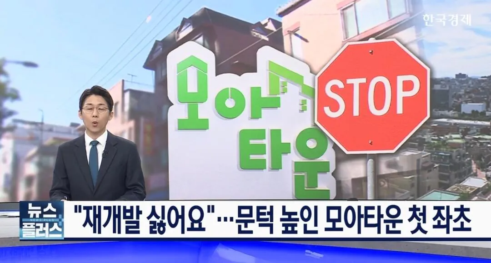
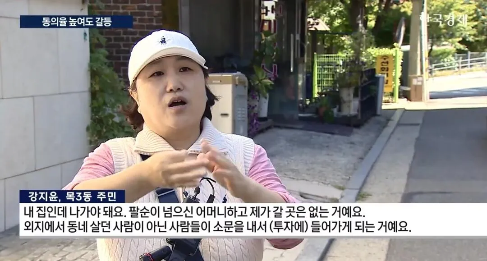
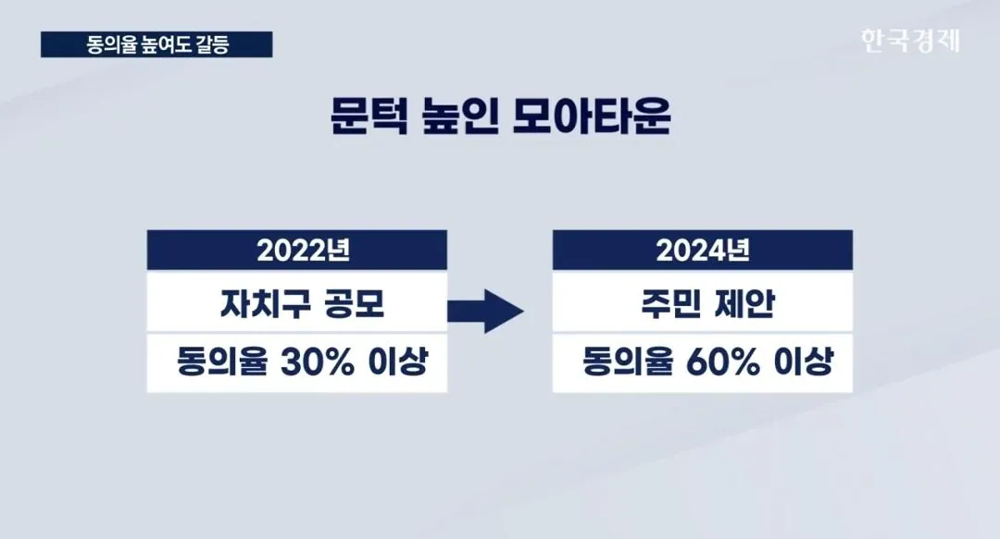
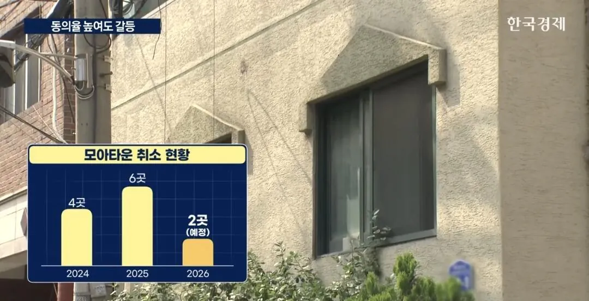
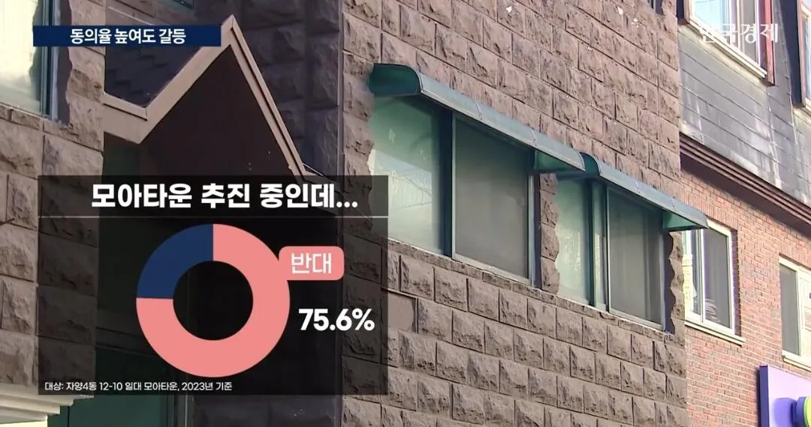
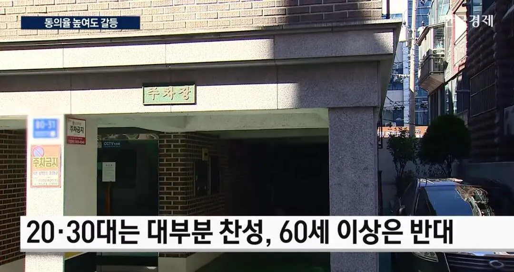
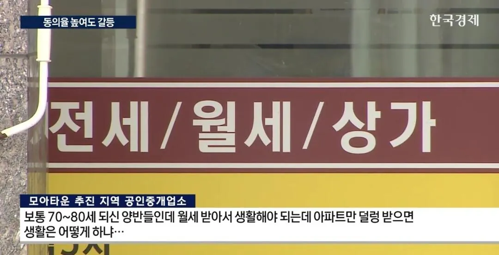
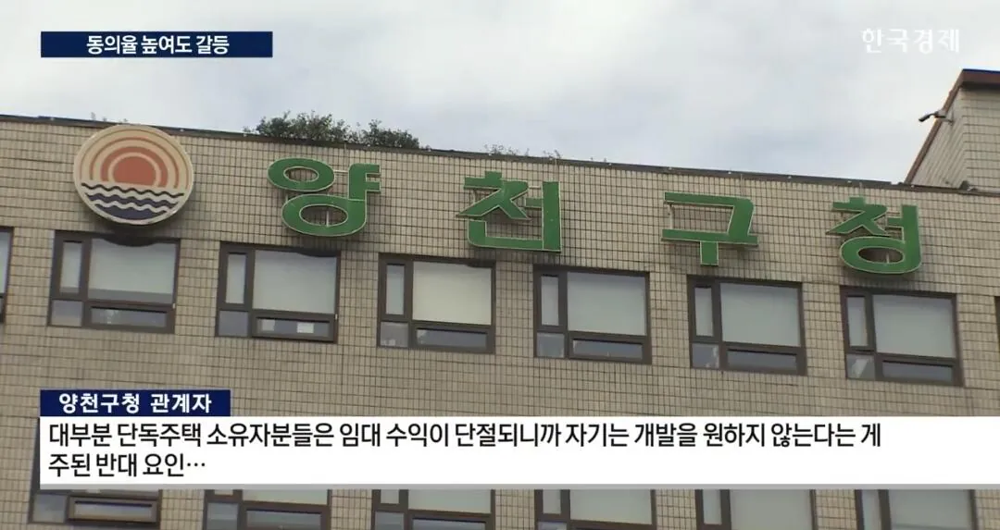

호락호락 하지 않음ㅋㅋ








호락호락 하지 않음ㅋㅋ
다가구나 단독은 그냥 구역지정되면 팔고 나가는게 정신건강에 좋음 그리고 서울에서는 구역지정만 되도 뭐 입지에 따라 다르긴 하겠지만 호가 쭉쭉 올라가니까 걍 파는게 속 편함
평수작은데나 반지하 이런데는 동의율 100퍼 뜨는데 결국 엎어지는 이유는 단독/다가구/상가 동의율 안나와서 엎어지는거라서
ㅇㅇ 뭐 일단 조합의 감정평가 자체가 다가구들 후려치는거라. 무조건 소송 진행해야하더라고.
그것도 소송 하는 타이밍따라서 금액차이가 굉장히 많이 나더라...
동의율 높게뜨는이유는 조합이 주민들을 속여서임. 우리동네는 모아타운 진행하는거처럼 속여서 도장 받아냄.
모아타운 진행하면 그래도 사업성이 생기니까 도장 찍었다가, 실제로 모아타운 말고 소규모로 진행해버려서 다들 포기하는 중이야..
그래서 모아타운 시세가 잘 안오르더라
어차피 AI때문에 일자리도 주는데 그냥 안고 뒤지라고하지 뭐
근데 75프로 넘기면 저런 반대 25프로는 걍 현금청산 당하던지 (이걸 보통 빌라소유주들이 모여서 단독주택이나 상가 배가른다 표현하더라) 분담금내고 집받던지 하나 양자택일임.
민주주의 사회에서 어쩌겠음 다수에 따르는거지 ㅋㅋ
소송하면 소송 시작할 때 당시의 시세대로 받아서 무조건 손해는 볼 수밖에 없는 구조더라고
빌라소유주들이 모여서 뭘 하는게 아니라. 저 작업할려고 이사를 와서 작업침.. 친인척들까지 싹 다 끌고 와서 작업쳐서 그냥 답이없음 저거 작업당하면
토지면적도 50% 넘어야 해서 엎어지는 경우 많음
2층이나 3층짜리 상가주택 가지고 있는 60대 이상 소유주는 지금도 그럭저럭 먹고 사는데 재개발 한다고 해서 뭔 이득이 있다고. 어차피 재개발 해봤자 자기 살아생전에 입주할지도 불투명하고, 충분한 권리가액 보장도 안되어서 주택 상가 둘 다 받을지 말지도 모르는 판국인데. 이미 생활환경 적응 다 되었고, 정든 이웃도 있고, 교회나 성당 복지센터 등등 소속감 느낄 수 있는 곳들도 확보해 놨는데 재개발 되면 이게 싹 다 날라간단 말이지.
이 사람들 다 죽고 건물분 자산 멸실된 곳이 많아야 재개발 될꺼야 앞으로는.
건축비가 비싸져서 일단 현 제도 하에서는 사업성 확보가 쉽지 않음.
사업성이 높게 나올려면 차라리 용적률을 올려주면 됨. 그럼 높게 지어서 사업성 확보 가능하고 공급도 충족 가능한데 것도 안해주는게 문제
용적율 제한
층고 제한
임대비율 강제
기부체납 강제
분상제 적용
진짜 재개발 활성화시킬 맘이 있으면 이런 제한들 풀어줘야지
건축비는 무한상승인데 제한은 그대로라면 시늉만 내는거고
ㅇㅇ제생각도 그래요.
근데 그렇게해서 다 늘려버리면 도로용량은 또 감당 가능할까 싶은데..
걍 그것만 늘려서 해결될 문제도 아닌거같어
동의율 70-80%는 되야하지 않나? 너무 낮네
모아타운 지정되려면 60퍼 필요한거고
조합설립하려면 75퍼 이상 필요함
80 아녔나 그리고 원주민 끌어낼려면 95퍼 이상 동의율 또 필요한걸로 아는데 바꼇나
저 조건이 계속 바뀌던데
제가 업데이트가 느려서 틀렷을 수 잇슴
ㅇㅇ 엄청 자주 바뀌긴 하더라고..
찬성 대부분은 저기 실거주자가 아닐듯
실거주도 어쩔 수 없이 찬성하는경우가 많음.
반대하면 진짜 본전도 못건지더라고...
그냥 재개발이랑은 다른건가
규모가 다르지
모아타운은 구역별로 잘게 쪼개서 진행이 가능함
모아타운이 뭔지도 모르는데 우리동네 얘기 였네 ㄷㄷ
맞는말임. 언젠가는 개발 되지.
근데 일단 시세대로 쳐주기만 했으면 좋겠음.
그게 안되니까 문제임.
진짜 송사 싫다고 피하는사람들 많은데
다가구같은 경우엔 조합이 주자는대로 받고
소송 피하면 한 4-5억 손해봄.